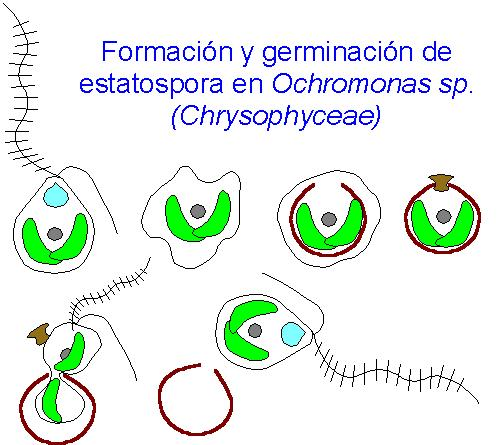

- Cl.
Crisofíceas, algas doradas
- Unas 800 spp., principalmente
monadoides, ameboides o coloniales
- Son frecuentes en aguas
continentales frías y oligotróficas
- Forman un tipo característico de
quistes: estatosporas
- Rep.: en algunas isogamia y meiosis
zigótica
- Ejemplos:
- Ochromonas
- Silicoflagelados, con esqueleto
silíceo
|

|